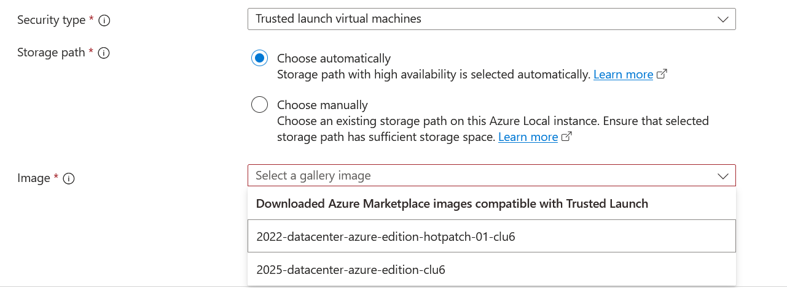
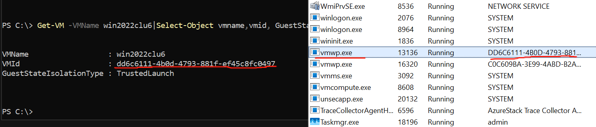
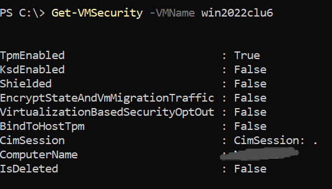
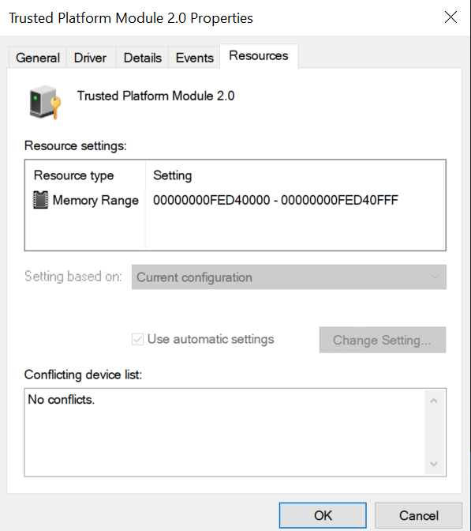
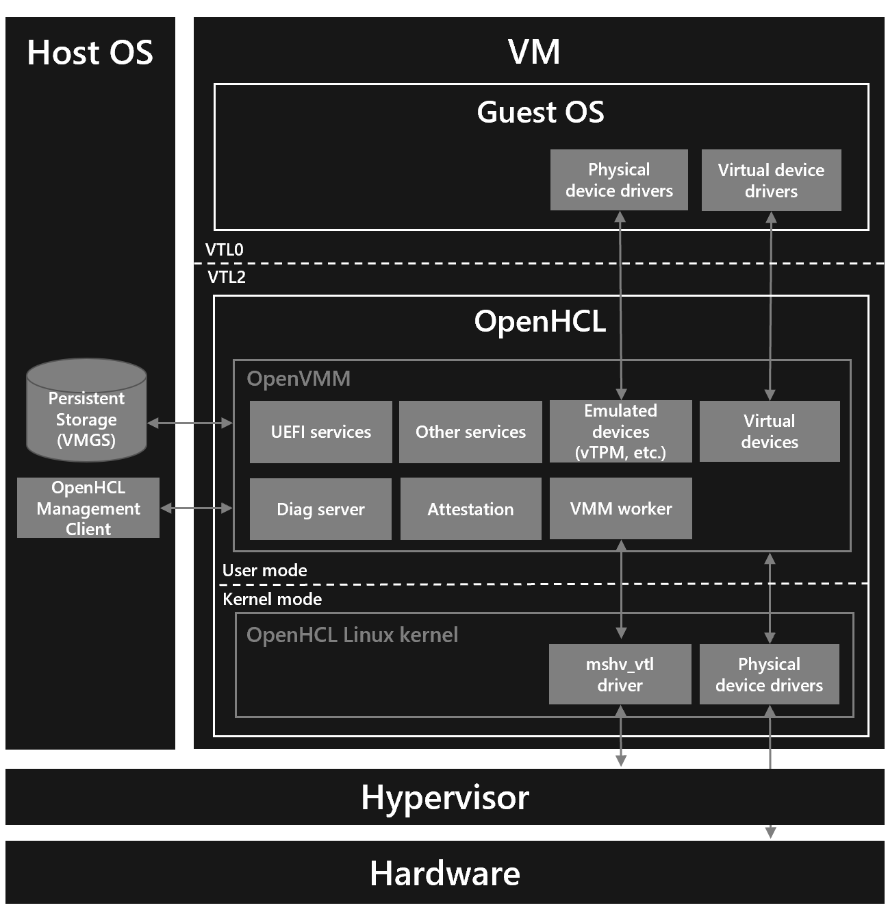
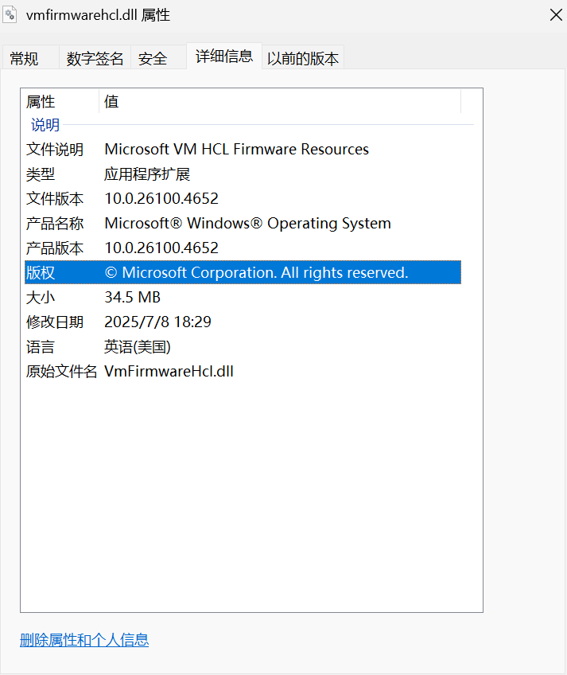
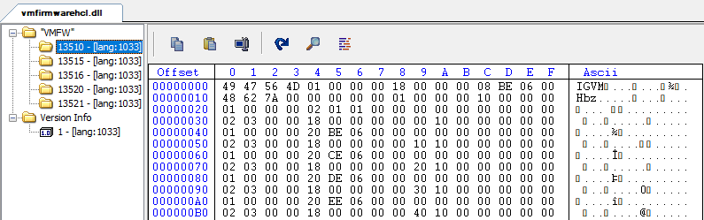
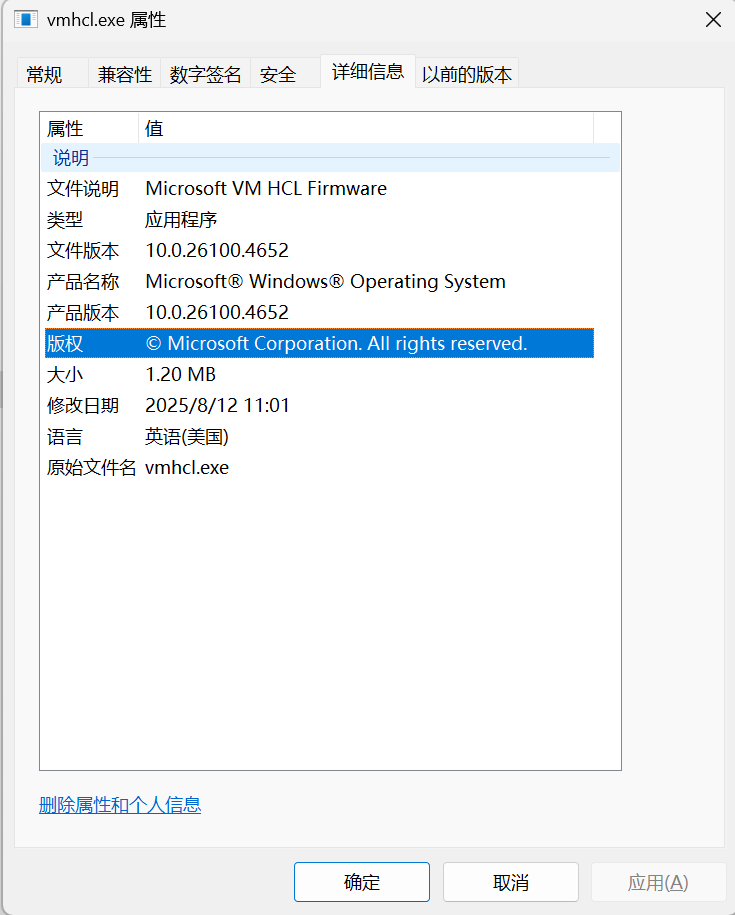
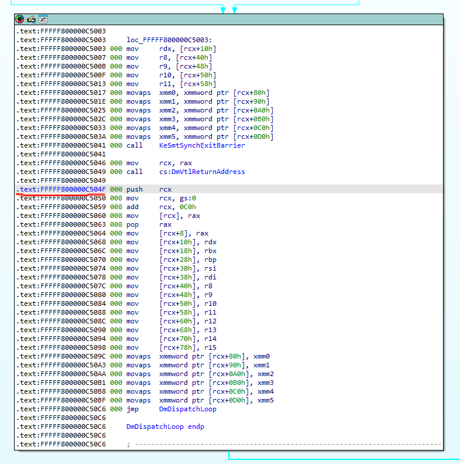
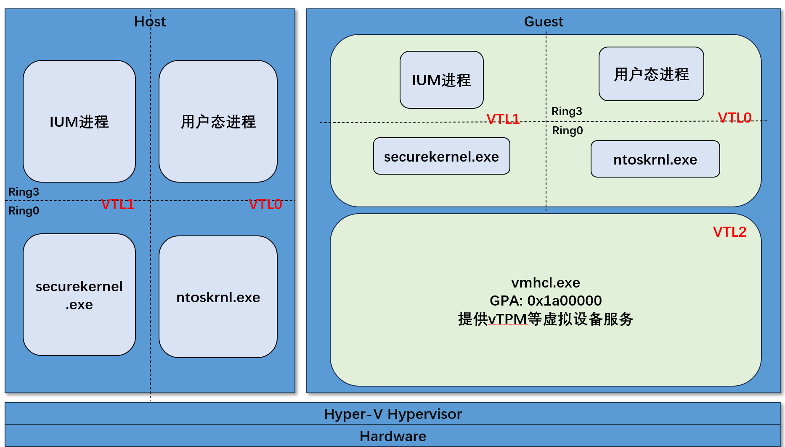

The Virtual Secure Mode (VSM) mechanism is a data protection and isolation technology in Windows, implemented through virtualization.
In a previous article(深入解析Windows VTL机制 & IUM进程)，we introduced the Windows VTL mechanism and the IUM process. Interested readers may revisit that content.
Let’s briefly review the concept of VTL (Virtual Trust Levels). MSDN describes it as follows:
VSM achieves and maintains isolation through Virtual Trust Levels (VTLs). VTLs are enabled and managed on both a per-partition and per-virtual processor basis.
Virtual Trust Levels are hierarchical, with higher levels being more privileged than lower levels. VTL0 is the least privileged level, with VTL1 being more privileged than VTL0, VTL2 being more privileged than VTL1, etc.
Architecturally, up to 16 levels of VTLs are supported; however a hypervisor may choose to implement fewer than 16 VTL’s. Currently, only two VTLs are implemented.
Each VTL has its own set of memory access protections. These access protections are managed by the hypervisor in a partition’s physical address space, and thus cannot be modified by system level software running in the partition.
Since more privileged VTLs can enforce their own memory protections, higher VTLs can effectively protect areas of memory from lower VTLs. In practice, this allows a lower VTL to protect isolated memory regions by securing them with a higher VTL. For example, VTL0 could store a secret in VTL1, at which point only VTL1 could access it. Even if VTL0 is compromised, the secret would be safe.
According to Microsoft documentation, Windows currently supports up to two VTL levels—VTL0 and VTL1. These two levels were analyzed in detail in the earlier article and won’t be repeated here. Higher VTL levels are more secure, and lower VTLs cannot modify (or even access) the data of higher ones.
But reality tells a different story.
In fact, Microsoft has quietly added support for VTL2 and extensively deployed it in their commercial Azure cloud platform.
It all began with an unexpected discovery.
While creating a VM in Azure Local using an Azure Marketplace image, I selected Security type as Trusted Launch virtual machines, as shown below:

Both images I downloaded from the Azure Marketplace supported the Trusted Launch feature.
Once the VM was created, I checked it from the Host. To my surprise, these Trusted Launch VMs did not start a VMSP process to support vTPM, as shown below:

There was no VMSP process corresponding to the VMWP process (for those unfamiliar with VMSP, refer to the earlier article. In short, enabling vTPM normally spawns a VMSP process paired with the VMWP process).
At first, I thought Trusted Launch VMs simply disabled vTPM by default. But I was wrong. Checking the VM’s security configuration confirmed that TPM was enabled:

And in Device Manager inside the VM, evidence of an active vTPM was present:

As shown, the vTPM MMIO address starting at 0xfed40000 appeared, and the device was working normally.
So the question arose: If vTPM is enabled and functional, then Hyper-V must have some executable or code providing this virtual TPM device. Based on prior Hyper-V research, we know that VMSP contains binaries to support vTPM, with a VMSP process launched at VM startup. But for Trusted Launch VMs, this doesn’t happen. There must be another binary (or set of binaries) providing equivalent functionality. The challenge: find where they are, when they load, and under what privileges they serve the VM.
Normally, user-mode virtual devices are initialized through the VMWP process. But in Trusted Launch VMs, devices communicating via IO/MMIO virtualization—such as vTPM or power management devices—are not initialized. Let’s take the PowerManagementDevice as an example:
__int64 PowerManagementDevice::PowerOn(__int64 this, struct IVirtualDeviceRepository *a2, int a3)
{
//Code omitted
v35 = 0;
v5 = *(_QWORD *)(this + 248) & -(__int64)(*(_QWORD *)(this + 248) != 0i64);
v6 = (*(__int64 (__fastcall **)(__int64, int *))(*(_QWORD *)v5 + 104i64))(v5, &v35);//
// vmwp!SecurityManager::IsHclEnabled
if ( v6 < 0 )
wil::details::in1diag3::Throw_Hr(
retaddr,
(void *)0xBD,
(unsigned int)"onecore\\vm\\dv\\chipset\\power\\powermanagementdevice.cpp",
(const char *)(unsigned int)v6,
v18);
v34 = 0;
v36 = 0;
v7 = *(_QWORD *)(this + 248) & -(__int64)(*(_QWORD *)(this + 248) != 0i64);
v8 = (*(__int64 (__fastcall **)(__int64, int *, int *))(*(_QWORD *)v7 + 80i64))(v7, &v34, &v36);//
// vmwp!SecurityManager::IsVmIsolated
if ( v8 < 0 )
wil::details::in1diag3::Throw_Hr(
retaddr,
(void *)0xC2,
(unsigned int)"onecore\\vm\\dv\\chipset\\power\\powermanagementdevice.cpp",
(const char *)(unsigned int)v8,
v18);
if ( v35 || !v36 )
return 0i64;
//PowerManagementDevice initialization code omitted
Analysis shows: if HCL is enabled, or if v36 is false, the function returns success to VMWP without actually initializing the device.
Debugging confirmed this: when initializing a Trusted Launch VM, calling vmwp!SecurityManager::IsHclEnabled returns true (v35 = 1). Thus, device initialization code (like vTPM) is never executed by VMWP.
That explains why VMSP never appears. But then, what provides the vTPM functionality? It seems a hidden “ghost” virtual device is quietly serving the VM.
At this point, research hit a roadblock. We knew the effect, but not the cause. Perhaps the IsHclEnabled function is the key.
Searching for Hyper-V, HCL, and VTL2 led directly to a Microsoft blog: (OpenHCL: the new, open source paravisor). This article introduces OPENHCL’s functionality and architecture, including the architecture diagram below:

This diagram clarifies where VTL2 resides and its role. VTL2 runs inside the VM, unlike VTL1, which runs on the Host. For the VM, VTL2 looks like a shadow system running on virtual hardware, resembling a mini-hypervisor—but not nested virtualization. We’ll explore this further later. Importantly, the VM cannot perceive VTL2, and even if VTL1 (securekernel) is fully compromised, it cannot access or modify VTL2 data.
The diagram also shows VTL2 (OPENHCL) having both user mode and kernel mode. In reality, Microsoft’s closed-source VTL2 integrates these into one large kernel binary, similar to securekernel.
Take vTPM as an example: previously, device binaries were loaded by VMWP/VMSP. Now, they are moved into VTL2. Since VTL2 is transparent to the VM, the VM sees no difference between traditional and Trusted Launch virtualization. But on the Host side, Trusted Launch requires no Host processes to support vTPM.
For example, years ago, I found multiple vTPM vulnerabilities. Suppose one allowed remote code execution. In traditional virtualization, attackers could exploit it to compromise the Host’s VMSP process. With Trusted Launch, exploitation only executes code in VTL2—inside the VM boundary. This reduces the attack surface for VM escapes. At worst, it breaks isolation from VTL0 → VTL2, not VM → Host.
Additionally, for confidential computing scenarios (like TPM), VTL2’s isolation guarantees stronger data protection. The VM doesn’t know what it’s communicating with, and even with Ring0 access, it cannot reach VTL2’s physical memory.
OPENVMM, an open-source project, is invaluable for understanding VTL2. But how is VTL2 implemented in real Windows systems?
Through debugging, I identified a key binary: vmfirmwarehcl.dll.

As its name suggests, this DLL is tied to Windows’ VTL2 implementation. Opening it in IDA showed no code—it appeared to be a resource container. Checking its resources confirmed this:

Inside was a resource named VMFW, whose magic number was IGVM. This points us to the Independent Guest Virtual Machine (IGVM) file format. IGVM files package everything needed to boot a VM across different stacks, supporting isolation tech like AMD SEV-SNP and Intel TDX. Conceptually, an IGVM is a command set that a loader interprets to build the VM’s initial state.
In Windows VTL2, the IGVM loader extracts and processes the IGVM inside vmfirmwarehcl.dll, writes required data and binaries into the VM’s physical memory, and finalizes the startup.
Microsoft’s open-source（IGVM）documents the format, and includes tools to dump IGVMs for analysis.
Parsing vmfirmwarehcl.dll revealed five IGVMs. Their IGVM_VHT_SUPPORTED_PLATFORM fields included:
13510:
IGVM_VHT_SUPPORTED_PLATFORM:
CompatibilityMask: 00000001
HighestVtl: 02
PlatformType: 01
PlatformVersion: 0001
SharedGPABoundary: 0
13515:
IGVM_VHT_SUPPORTED_PLATFORM:
CompatibilityMask: 00000001
HighestVtl: 02
PlatformType: 02
PlatformVersion: 0001
SharedGPABoundary: 400000000000
13516:
IGVM_VHT_SUPPORTED_PLATFORM:
CompatibilityMask: 00000001
HighestVtl: 00
PlatformType: 02
PlatformVersion: 0001
SharedGPABoundary: 400000000000
13520:
IGVM_VHT_SUPPORTED_PLATFORM:
CompatibilityMask: 00000001
HighestVtl: 02
PlatformType: 03
PlatformVersion: 0001
SharedGPABoundary: 800000000000
13521:
IGVM_VHT_SUPPORTED_PLATFORM:
CompatibilityMask: 00000001
HighestVtl: 00
PlatformType: 03
PlatformVersion: 0001
SharedGPABoundary: 800000000000
Here, the fields we are most concerned with are HighestVtl and PlatformType. The definition of the PlatformType field is as follows:
pub enum IgvmPlatformType {
/// Native platform type without isolation.
NATIVE = 0x00,
/// Platform type of Hyper-V's which supports VSM isolation.
VSM_ISOLATION = 0x01,
/// AMD SEV-SNP.
SEV_SNP = 0x02,
/// Intel TDX.
TDX = 0x03,
/// AMD SEV.
#[cfg(feature = "unstable")]
#[cfg_attr(docsrs, doc(cfg(feature = "unstable")))]
SEV = 0x04,
/// AMD SEV-ES
#[cfg(feature = "unstable")]
#[cfg_attr(docsrs, doc(cfg(feature = "unstable")))]
SEV_ES = 0x05,
}
So, for the IGVM file at the VTL2 level, the HighestVtl field should be set to 2, and the PlatformType field should be VSM_ISOLATION. In this way, the file 13510 is identified.
Inside the 13510 IGVM file, there is a complete PE file:
IGVM_VHT_PAGE_DATA:
GPA: 0000000001A00000
CompatibilityMask: 00000001
FileOffset: 00000000
Flags: 00000000
Reserved: 00000000
Got 4096 bytes of file data:
| 00000000 | 4D 5A 90 00 03 00 00 00 04 00 00 00 FF FF 00 00 B8 00 00 00 00 00 00 00 40 00 00 00 00 00 00 00 | MZ......................@....... |
| 00000020 | 00 00 00 00 00 00 00 00 00 00 00 00 00 00 00 00 00 00 00 00 00 00 00 00 00 00 00 00 F0 00 00 00 | ................................ |
| 00000040 | 0E 1F BA 0E 00 B4 09 CD 21 B8 01 4C CD 21 54 68 69 73 20 70 72 6F 67 72 61 6D 20 63 61 6E 6E 6F | ........!..L.!This program canno |
| 00000060 | 74 20 62 65 20 72 75 6E 20 69 6E 20 44 4F 53 20 6D 6F 64 65 2E 0D 0D 0A 24 00 00 00 00 00 00 00 | t be run in DOS mode....$....... |
| 00000080 | 4E 5F 00 FF 0A 3E 6E AC 0A 3E 6E AC 0A 3E 6E AC EE 4E 6D AD 09 3E 6E AC 78 BF 6D AD 0C 3E 6E AC | N_...>n..>n..>n..Nm..>n.x.m..>n. |
| 000000A0 | 7E BF 6A AD 0E 3E 6E AC 7E BF 6B AD 0B 3E 6E AC 7E BF 6D AD 05 3E 6E AC 7E BF 66 AD CB 3F 6E AC | ~.j..>n.~.k..>n.~.m..>n.~.f..?n. |
| 000000C0 | 7E BF 6E AD 0B 3E 6E AC 7E BF 91 AC 0B 3E 6E AC 7E BF 6C AD 0B 3E 6E AC 52 69 63 68 0A 3E 6E AC | ~.n..>n.~....>n.~.l..>n.Rich.>n. |
| 000000E0 | 00 00 00 00 00 00 00 00 00 00 00 00 00 00 00 00 50 45 00 00 64 86 0C 00 67 E9 2F A8 00 00 00 00 | ................PE..d...g./..... |
| 00000100 | 00 00 00 00 F0 00 22 00 0B 02 0E 26 00 40 0D 00 00 10 0F 00 00 10 00 00 E0 4C 0C 00 00 10 00 00 | ......"....&.@...........L...... |
| 00000120 | 00 00 00 00 00 F8 FF FF 00 10 00 00 00 10 00 00 0A 00 00 00 0A 00 00 00 0A 00 00 00 00 00 00 00 | ................................ |
| 00000140 | 00 70 1C 00 00 10 00 00 0A 7D 13 00 01 00 60 41 00 00 08 00 00 00 00 00 00 20 00 00 00 00 00 00 | .p.......}....`A......... ...... |
| 00000160 | 00 00 10 00 00 00 00 00 00 10 00 00 00 00 00 00 00 00 00 00 10 00 00 00 10 04 11 00 8E 0C 00 00 | ................................ |
| 00000180 | 00 00 00 00 00 00 00 00 00 40 1C 00 F8 03 00 00 00 30 1B 00 DC 8F 00 00 00 00 00 00 00 00 00 00 | .........@.......0.............. |
...Data omitted...
From the dumped information, we can see that the following PE file is written into the Guest’s physical memory, starting at the Guest physical memory address 0x1A00000. In fact, this PE file is the implementation of the VTL2 layer, which gets written into the virtual machine’s physical memory during the VM initialization stage.
By extracting this PE file from the 13510 IGVM file, we obtain the following executable file: vmhcl.exe

vmhcl.exe is the implementation of the VTL2 layer on the Windows platform. Moreover, Microsoft provides PDB downloads for vmhcl.exe, which reduces the complexity of reverse engineering. Functionally, vmhcl.exe is somewhat similar to securekernel.exe, as both provide functionality for higher VTL layers. The difference is that securekernel.exe serves the VTL1 layer, while vmhcl.exe serves the VTL2 layer.
Since it is VTL, everything inevitably revolves around the term virtualization. And once virtualization is mentioned, the starting point always goes back to the Windows Hypervisor layer.
The hypervisor version used in this article is: 10.0.26100.4652
The process of reverse engineering the hypervisor is omitted here. For the current version of the hypervisor, several key member offsets are as follows:
gs:360h ---- partition object
gs:360h + 0x1B0 : partition privilege
gs:360h + 0x1D0 : max vCPU amount
gs:360h + 0x1D4 : max vCPU index
gs:360h + 0x1E0 : virtual processor index 0
gs:360h + 0x1E8 : virtual processor index 1
...
virtual process + 0x148 : VTL0
virtual process + 0x150 : VTL1
virtual process + 0x158 : VTL2
VTL + 0x13E8 : VTL State
VTL State + 0x180 : VMCA VA
VTL State + 0x188 : VMCA PA
Next, we use debugging to observe the behavior of the virtual machine during the transition from VTL0 to VTL2, in order to better understand the practical purpose of the VTL2 level. First, the initial problem to solve is how to trigger code in VTL2 from within the virtual machine. It is known that the vTPM runs at the VTL2 level in Trusted Launch type virtual machines, so theoretically, performing TPM-related operations inside the VM should trigger the processing code at the VTL2 level.
Therefore, in theory, running the Get-Tpm command inside the virtual machine can be used to trigger code in VTL2.
Once we know how to trigger code in VTL2, the next step is to determine where the hypervisor performs the VTL level switch—specifically, the switch from VTL0 to VTL2. By setting breakpoints during the VTL switch, we can observe the memory state at different VTL levels.
After some work, we identified the function responsible for switching VTLs through reverse engineering:
sub_FFFFF800002B0370 proc near
mov [rsp+arg_8], rbx
mov [rsp+arg_10], rbp
mov [rsp+arg_18], rsi
push rdi
sub rsp, 20h
movzx eax, r8b
mov rbx, rdx
mov rsi, rcx
mov rbp, [rdx+rax*8+148h] ;The rax is the VTL Layer number
mov [rdx+404h], r8b
dec r8b
mov [rdx+3C0h], rbp
cmp r8b, 1
ja short loc_FFFFF800002B03B1
xor al, al
jmp short loc_FFFFF800002B03B7
loc_FFFFF800002B03B1:
mov al, [rdx+0DC0h]
loc_FFFFF800002B03B7:
mov [rdx+406h], al
lea rdi, [rbp+13C0h]
mov [rdx+1010h], rdi
mov rdx, rdi
call sub_FFFFF8000021C8D0 ；Finally, switch VTL level by this function
...Code Omitted...
You can use a conditional breakpoint here to pause execution when the VTL level number is 2：
bp hv+02B038E".if (al == 2) {} .else{g;}"
The following is the debugging process:
32: kd> g
hv+0x2b038e:
fffff875`c5cb038e 488bacc248010000 mov rbp,qword ptr [rdx+rax*8+148h]
25: kd> r rax
rax=0000000000000002
25: kd> bd 1
25: kd> pc
hv+0x2b03ce:
fffff875`c5cb03ce e8fdc4f6ff call hv+0x21c8d0 (fffff875`c5c1c8d0)
25: kd> t
hv+0x21c8d0:
fffff875`c5c1c8d0 4053 push rbx
25: kd> t
hv+0x21c8d2:
fffff875`c5c1c8d2 4883ec20 sub rsp,20h
25: kd> t
hv+0x21c8d6:
fffff875`c5c1c8d6 488b4228 mov rax,qword ptr [rdx+28h]
25: kd> t
hv+0x21c8da:
fffff875`c5c1c8da 488bd9 mov rbx,rcx
25: kd> t
hv+0x21c8dd:
fffff875`c5c1c8dd 4c8bda mov r11,rdx
25: kd> t
hv+0x21c8e0:
fffff875`c5c1c8e0 c6802601000000 mov byte ptr [rax+126h],0
25: kd> t
hv+0x21c8e7:
fffff875`c5c1c8e7 90 nop
25: kd> t
hv+0x21c8e8:
fffff875`c5c1c8e8 488b4a28 mov rcx,qword ptr [rdx+28h]
25: kd> t
hv+0x21c8ec:
fffff875`c5c1c8ec 488b9180010000 mov rdx,qword ptr [rcx+180h]
25: kd> t
hv+0x21c8f3:
fffff875`c5c1c8f3 4885d2 test rdx,rdx
25: kd> t
hv+0x21c8f6:
fffff875`c5c1c8f6 0f84f2000000 je hv+0x21c9ee (fffff875`c5c1c9ee)
25: kd> t
hv+0x21c8fc:
fffff875`c5c1c8fc 8b05ae27e9ff mov eax,dword ptr [hv+0xaf0b0 (fffff875`c5aaf0b0)]
25: kd> t
hv+0x21c902:
fffff875`c5c1c902 a801 test al,1
25: kd> t
hv+0x21c904:
fffff875`c5c1c904 0f85b3000000 jne hv+0x21c9bd (fffff875`c5c1c9bd)
25: kd> t
hv+0x21c90a:
fffff875`c5c1c90a 0fc7b188010000 vmptrld qword ptr [rcx+188h]
25: kd> !vmread 0x201a //Guest VTL0 EPTP
@$vmread(0x201a) : 0x2ac843e05e
25: kd> !vmread 0x6802 //Guest VTL0 CR3
@$vmread(0x6802) : 0x7b5000
25: kd> !vmread 0x681c //Guest VTL0 RSP
@$vmread(0x681c) : 0xffffe10d5e6ef1f0
25: kd> !vmread 0x681e //Guest VTL0 RIP
@$vmread(0x681e) : 0xfffff8075704d84b //This Pointer is the address in Guest:
//tpm!TpmTransportCommandResponse::CheckRequestPttLocalityZero+0xf: fffff807`5704d84b 0fb610 movzx edx,byte ptr [rax]
25: kd> t
hv+0x21c911:
fffff875`c5c1c911 41f6435801 test byte ptr [r11+58h],1
25: kd> !vmread 0x201a //Guest VTL2 EPTP
@$vmread(0x201a) : 0x2ac844205e
25: kd> !vmread 0x6802 //Guest VTL2 CR3
@$vmread(0x6802) : 0x1c16000
25: kd> !vmread 0x681c //Guest VTL2 RSP
@$vmread(0x681c) : 0x1000023efb8
25: kd> !vmread 0x681e //Guest VTL2 RIP
@$vmread(0x681e) : 0x1000008d035
25: kd> !vtop 0x2ac844205e 0x1c16000
Amd64VtoP: Virt 0000000001c16000, pagedir 0000002ac8442000
Amd64VtoP: PML4E 0000002ac8442000
Amd64VtoP: PDPE 0000002ac844a000
Amd64VtoP: PDE 000000290d4ed070
Amd64VtoP: PTE 00000023460020b0
Amd64VtoP: Mapped phys 0000002947616000
Virtual address 1c16000 translates to physical address 2947616000.
25: kd> dq /p 2947616000+8*2
00000029`47616010 00000000`01c0e023 00000000`00000000
00000029`47616020 00000000`00000000 00000000`00000000
00000029`47616030 00000000`00000000 00000000`00000000
00000029`47616040 00000000`00000000 00000000`00000000
00000029`47616050 00000000`00000000 00000000`00000000
00000029`47616060 00000000`00000000 00000000`00000000
00000029`47616070 00000000`00000000 00000000`00000000
00000029`47616080 00000000`00000000 00000000`00000000
25: kd> !vtop 0x2ac844205e 01c0e000
Amd64VtoP: Virt 0000000001c0e000, pagedir 0000002ac8442000
Amd64VtoP: PML4E 0000002ac8442000
Amd64VtoP: PDPE 0000002ac844a000
Amd64VtoP: PDE 000000290d4ed070
Amd64VtoP: PTE 0000002346002070
Amd64VtoP: Mapped phys 000000294760e000
Virtual address 1c0e000 translates to physical address 294760e000.
25: kd> dq /p 294760e000 +8*0
00000029`4760e000 00000000`01c0c023 00000000`00000000
00000029`4760e010 00000000`00000000 00000000`00000000
00000029`4760e020 00000000`00000000 00000000`00000000
00000029`4760e030 00000000`00000000 00000000`00000000
00000029`4760e040 00000000`00000000 00000000`00000000
00000029`4760e050 00000000`00000000 00000000`00000000
00000029`4760e060 00000000`00000000 00000000`00000000
00000029`4760e070 00000000`00000000 00000000`00000000
25: kd> !vtop 0x2ac844205e 01c0c000
Amd64VtoP: Virt 0000000001c0c000, pagedir 0000002ac8442000
Amd64VtoP: PML4E 0000002ac8442000
Amd64VtoP: PDPE 0000002ac844a000
Amd64VtoP: PDE 000000290d4ed070
Amd64VtoP: PTE 0000002346002060
Amd64VtoP: Mapped phys 000000294760c000
Virtual address 1c0c000 translates to physical address 294760c000.
25: kd> dq /p 294760c000+8*1
00000029`4760c008 00000000`04b2b023 00000000`01df5023
00000029`4760c018 00000000`00000000 00000000`00000000
00000029`4760c028 00000000`00000000 00000000`00000000
00000029`4760c038 00000000`00000000 00000000`00000000
00000029`4760c048 00000000`00000000 00000000`00000000
00000029`4760c058 00000000`00000000 00000000`00000000
00000029`4760c068 00000000`00000000 00000000`00000000
00000029`4760c078 00000000`00000000 00000000`00000000
25: kd> !vtop 0x2ac844205e 04b2b000
Amd64VtoP: Virt 0000000004b2b000, pagedir 0000002ac8442000
Amd64VtoP: PML4E 0000002ac8442000
Amd64VtoP: PDPE 0000002ac844a000
Amd64VtoP: PDE 000000290d4ed128
Amd64VtoP: PTE 0000002346019958
Amd64VtoP: Mapped phys 000000294cd2b000
Virtual address 4b2b000 translates to physical address 294cd2b000.
25: kd> dq /p 294cd2b000+8*3e
00000029`4cd2b1f0 80000000`04b5d063 00000000`00000000
00000029`4cd2b200 00000000`00000000 80200000`04b4e503
00000029`4cd2b210 80000000`04b4f103 00000000`00000000
00000029`4cd2b220 80100000`04b50163 00000000`00000000
00000029`4cd2b230 00000000`00000000 00000000`00000000
00000029`4cd2b240 00000000`00000000 00000000`00000000
00000029`4cd2b250 00000000`00000000 00000000`00000000
00000029`4cd2b260 00000000`00000000 00000000`00000000
25: kd> !vtop 0x2ac844205e 04b5d000
Amd64VtoP: Virt 0000000004b5d000, pagedir 0000002ac8442000
Amd64VtoP: PML4E 0000002ac8442000
Amd64VtoP: PDPE 0000002ac844a000
Amd64VtoP: PDE 000000290d4ed128
Amd64VtoP: PTE 0000002346019ae8
Amd64VtoP: Mapped phys 000000294cd5d000
Virtual address 4b5d000 translates to physical address 294cd5d000.
25: kd> dq /p 294cd5d000+fb8
00000029`4cd5dfb8 fffff800`000c504f 00000000`00000000 //The return address at the top of the RSP stack after address translation
00000029`4cd5dfc8 00000000`00000000 00000000`00000000
00000029`4cd5dfd8 00000000`00000000 00000000`00000000
00000029`4cd5dfe8 00000000`00000000 00000000`00000000
00000029`4cd5dff8 00000000`00000000 00000100`0024e000
00000029`4cd5e008 0000000f`0000000e 00000000`00000007
00000029`4cd5e018 00000000`00000000 00000001`00000000
00000029`4cd5e028 00000100`00267000 00000100`0024e014
From the above debugging process, it can be observed that when the virtual machine kernel code executes up to tpm!TpmTransportCommandResponse::CheckRequestPttLocalityZero+0xf, since the address to be read is an MMIO address mapped via map, this triggers a VM-Exit and control is handed over to the hypervisor for handling.
Subsequently, the hypervisor performs a VTL switch. That is, in the debugging process above, at vmptrld qword ptr [rcx+188h], VTL0 is switched to VTL2. After switching to VTL2, by reading the VMCS fields, it is found that the RSP register value of VTL2 at this point is 0x1000023efb8. Here, the RSP points to the top of the stack of the thread currently running the VP in VTL2, and this location holds the function’s return address.
After a series of address translations, the VTL2 address 0x1000023efb8 is converted to the physical address in the Host: 0x294cd5dfb8. After reading it with a debugger, the return address is found to be: 0xfffff800000c504f.
Opening vmhcl.exe in IDA, let’s examine the contents at 0xfffff800000c504f:

Judging from the function name, it is essentially the main loop function of the VTL2 kernel thread. When the VTL switches to VTL2, the code in VTL2 starts executing from the instruction immediately after DmVtlReturnAddress, handling VTL0-level requests to read from MMIO addresses.
According to the information in the IGVM file, the vmhcl.exe file will be written into the Guest physical memory at 0x1a00000. This GPA location is fixed, and the base address of the virtual address mapped in VTL2 is 0xFFFFF80000000000. The debugging process also confirms this.
//Here! Switch to the VTL layer number 2.
16: kd> !vmread 0x201a
@$vmread(0x201a) : 0x1355e4205e
16: kd> !vmread 0x6802
@$vmread(0x6802) : 0x1c16000
16: kd> !vmread 0x681c
@$vmread(0x681c) : 0x100002a2fb8
16: kd> !vmread 0x681e
@$vmread(0x681e) : 0x1000008d035
16: kd> !vtop 0x1355e4205e 0x1c16000
Amd64VtoP: Virt 0000000001c16000, pagedir 0000001355e42000
Amd64VtoP: PML4E 0000001355e42000
Amd64VtoP: PDPE 0000001355e4a000
Amd64VtoP: PDE 00000012eb4ed070
Amd64VtoP: PTE 000000150f2020b0
Amd64VtoP: Mapped phys 0000001506616000
Virtual address 1c16000 translates to physical address 1506616000.
16: kd> dq /p 1506616000+8*1f0
00000015`06616f80 00000000`01c0d023 00000000`00000000
00000015`06616f90 00000000`00000000 00000000`00000000
00000015`06616fa0 00000000`00000000 00000000`00000000
00000015`06616fb0 00000000`00000000 00000000`00000000
00000015`06616fc0 00000000`00000000 00000000`00000000
00000015`06616fd0 00000000`00000000 00000000`00000000
00000015`06616fe0 00000000`00000000 00000000`00000000
00000015`06616ff0 00000000`00000000 00000000`00000000
16: kd> !vtop 0x1355e4205e 01c0d000
Amd64VtoP: Virt 0000000001c0d000, pagedir 0000001355e42000
Amd64VtoP: PML4E 0000001355e42000
Amd64VtoP: PDPE 0000001355e4a000
Amd64VtoP: PDE 00000012eb4ed070
Amd64VtoP: PTE 000000150f202068
Amd64VtoP: Mapped phys 000000150660d000
Virtual address 1c0d000 translates to physical address 150660d000.
16: kd> dq /p 150660d000+8*0
00000015`0660d000 00000000`01c11023 00000000`00000000
00000015`0660d010 00000000`00000000 00000000`00000000
00000015`0660d020 00000000`00000000 00000000`00000000
00000015`0660d030 00000000`00000000 00000000`00000000
00000015`0660d040 00000000`00000000 00000000`00000000
00000015`0660d050 00000000`00000000 00000000`00000000
00000015`0660d060 00000000`00000000 00000000`00000000
00000015`0660d070 00000000`00000000 00000000`00000000
16: kd> !vtop 0x1355e4205e 01c11000
Amd64VtoP: Virt 0000000001c11000, pagedir 0000001355e42000
Amd64VtoP: PML4E 0000001355e42000
Amd64VtoP: PDPE 0000001355e4a000
Amd64VtoP: PDE 00000012eb4ed070
Amd64VtoP: PTE 000000150f202088
Amd64VtoP: Mapped phys 0000001506611000
Virtual address 1c11000 translates to physical address 1506611000.
16: kd> dq /p 1506611000+8*0
00000015`06611000 00000000`01c10023 00000000`00000000
00000015`06611010 00000000`00000000 00000000`00000000
00000015`06611020 00000000`00000000 00000000`00000000
00000015`06611030 00000000`00000000 00000000`00000000
00000015`06611040 00000000`00000000 00000000`00000000
00000015`06611050 00000000`00000000 00000000`00000000
00000015`06611060 00000000`00000000 00000000`00000000
00000015`06611070 00000000`00000000 00000000`00000000
16: kd> !vtop 0x1355e4205e 01c10000
Amd64VtoP: Virt 0000000001c10000, pagedir 0000001355e42000
Amd64VtoP: PML4E 0000001355e42000
Amd64VtoP: PDPE 0000001355e4a000
Amd64VtoP: PDE 00000012eb4ed070
Amd64VtoP: PTE 000000150f202080
Amd64VtoP: Mapped phys 0000001506610000
Virtual address 1c10000 translates to physical address 1506610000.
16: kd> dq /p 1506610000+8*0
00000015`06610000 80000000`01a00101 00000000`01a01101
00000015`06610010 00000000`01a02101 00000000`01a03101
00000015`06610020 00000000`01a04101 00000000`01a05101
00000015`06610030 00000000`01a06101 00000000`01a07101
00000015`06610040 00000000`01a08101 00000000`01a09101
00000015`06610050 00000000`01a0a121 00000000`01a0b101
00000015`06610060 00000000`01a0c101 00000000`01a0d121
00000015`06610070 00000000`01a0e101 00000000`01a0f101
16: kd> !vtop 0x1355e4205e 01a00000
Amd64VtoP: Virt 0000000001a00000, pagedir 0000001355e42000
Amd64VtoP: PML4E 0000001355e42000
Amd64VtoP: PDPE 0000001355e4a000
Amd64VtoP: PDE 00000012eb4ed068
Amd64VtoP: PTE 000000150f201000
Amd64VtoP: Mapped phys 0000001506400000
Virtual address 1a00000 translates to physical address 1506400000.
16: kd> db /p 1506400000
00000015`06400000 4d 5a 90 00 03 00 00 00-04 00 00 00 ff ff 00 00 MZ..............
00000015`06400010 b8 00 00 00 00 00 00 00-40 00 00 00 00 00 00 00 ........@.......
00000015`06400020 00 00 00 00 00 00 00 00-00 00 00 00 00 00 00 00 ................
00000015`06400030 00 00 00 00 00 00 00 00-00 00 00 00 f0 00 00 00 ................
00000015`06400040 0e 1f ba 0e 00 b4 09 cd-21 b8 01 4c cd 21 54 68 ........!..L.!Th
00000015`06400050 69 73 20 70 72 6f 67 72-61 6d 20 63 61 6e 6e 6f is program canno
00000015`06400060 74 20 62 65 20 72 75 6e-20 69 6e 20 44 4f 53 20 t be run in DOS
00000015`06400070 6d 6f 64 65 2e 0d 0d 0a-24 00 00 00 00 00 00 00 mode....$.......
//Here is the program header of the file vmhcl.exe.
To summarize, the architecture of VTL2 is as follows.

Through reverse engineering of vmhcl.exe, it was found that vmhcl.exe provides a debug functionality. By modifying the debug parameters, one can choose to use serial or network debugging. In theory, it is possible to debug vmhcl.exe in a manner similar to debugging the Windows kernel.
void *__fastcall DmEarlyInitializeBootProcessor(__int64 a1, _QWORD *a2)
{
_UNKNOWN **v3; // rbx
void *result; // rax
v3 = KepCpuArray;
if ( !*(_DWORD *)DmConfigLoaderBlock )
{
KeRaiseSystemError(5, 0, 0, 0, 0LL);
JUMPOUT(0xFFFFF80000009A7BuLL);
}
KdDebugParameters = 0;
KdDebuggingConfigured = 0;
if ( (MEMORY[0xFFFFF80004111048] & 1) != 0 )
{
KdpParseCommandLine(0xFFFFF80004001000uLL, &KdDebugParameters);
if ( KdDebugParameters )
KdDebuggingConfigured = 1;
}
KeInitializeSystemPhase0(v3);
KeInitializeProcessorPhase0(v3, a1);
MmInitializeSystemPhase0();
HvlInitializeSystemPhase0();
__writemsr(0x40000000u, 0x10A0101640064uLL);
HalInitializeSystem(0x40000000LL, 68097LL);
HalpInitLocalApicForCpu(*((unsigned int *)v3 + 2));
_bittestandset64(&KepActiveProcessorSet[(unsigned __int64)*((unsigned int *)v3 + 2) >> 6], (_DWORD)v3[1] & 0x3F);
_InterlockedIncrement(&KepActiveProcessorCount);
if ( (unsigned int)KepMaximumActiveCpuNumber <= *((_DWORD *)v3 + 2) )
KepMaximumActiveCpuNumber = *((_DWORD *)v3 + 2);
*((_DWORD *)v3 + 104) = 1;
KeAllocateProcessorStack(v3);
result = v3[53];
*a2 = result;
return result;
}
However, although vmhcl.exe provides full debugging capabilities from Microsoft, after investigation, modifying the debug parameters for serial or network debugging cannot successfully enable debugging for vmhcl.exe. This is because enabling vmhcl.exe debugging requires support from certain hypervisor parameters that ordinary users cannot access through standard methods, and Microsoft has not released official documentation for vmhcl.exe/VTL2. It seems that using the debugging functionality within vmhcl.exe to debug VTL2 is not currently feasible.
So, besides using a hardware debugger or an IDA + VMware dual-machine debugging setup to debug vmhcl.exe, are there any other approaches to easily debug vmhcl.exe?
Here, the 0xee injection debugging method will be introduced. Although this method cannot achieve single-step tracing like dual-machine debugging, it is still possible to set breakpoints in vmhcl.exe and inspect memory and register states.
First, the principle behind 0xee injection needs to be explained:
As is well known, a debugger sets a breakpoint at a specific location by inserting 0xcc into the target position. When the program executes the 0xcc and is intercepted by the debugger, the debugger restores the original instruction at that location. At this point, the breakpoint is triggered, waiting for user input.
Although it is not possible to insert 0xcc into VTL2 to implement breakpoints, this idea of inserting a breakpoint can still be borrowed. Two issues need to be solved:
Find an instruction as short as possible (to facilitate restoring after the breakpoint is triggered) that can trigger a VM-Exit event, pausing the virtual machine and letting the hypervisor handle it.
Be able to locate this triggered event within the hypervisor.
After searching, one instruction that meets these two conditions is 0xee.
In x64 assembly, 0xee means: out dx, al, which writes the data from the al register to the port stored in the dx register. Performing I/O port read/write operations in a virtual machine directly triggers a VM-Exit event, pausing the VM and trapping into the hypervisor for handling. This is ideal because the Windows platform allows debugging of the hypervisor. Moreover, the data written via the al register can be set as a magic number, such as 0xdead, making it convenient to locate this event during hypervisor debugging.
Thus, the complete breakpoint instruction is:
0: 66 b8 ad de mov ax,0xdead
4: ee out dx,al
Although it looks quite bloated, at least as a temporary debugging solution, it is still acceptable.
Next, we will use this method to debug the VTL2 layer’s vmhcl.exe as a test. A breakpoint will be set at the vmhcl!VTpmExecuteCommand function to examine the stack trace of the VTL2 context.
First, we need to locate the Host physical address of the vmhcl!VTpmExecuteCommand function. According to the disassembly of vmhcl!VTpmExecuteCommand, the virtual address of the function is 0xFFFFF8000008200C. As mentioned in the previous section, vmhcl.exe is mapped to the Guest physical address starting at 0x1a00000. Therefore, the physical address of the vmhcl!VTpmExecuteCommand function in the Guest is 0x1a8200c.
2: kd> !vtop 0x1355e4205e 01a8200c
Amd64VtoP: Virt 0000000001a8200c, pagedir 0000001355e42000
Amd64VtoP: PML4E 0000001355e42000
Amd64VtoP: PDPE 0000001355e4a000
Amd64VtoP: PDE 00000012eb4ed068
Amd64VtoP: PTE 000000150f201410
Amd64VtoP: Mapped phys 000000150648200c
Virtual address 1a8200c translates to physical address 150648200c.
2: kd> db /p 150648200c
00000015`0648200c 40 55 53 56 57 41 56 41-57 48 8b ec 48 83 ec 48 @USVWAVAWH..H..H
00000015`0648201c 48 8b 05 8d 71 09 00 48-33 c4 48 89 45 f0 49 8b H...q..H3.H.E.I.
00000015`0648202c f9 49 8b f0 44 8b f1 48-85 d2 0f 84 54 01 00 00 .I..D..H....T...
00000015`0648203c 4d 85 c9 0f 84 4b 01 00-00 83 f9 0a 0f 82 42 01 M....K........B.
00000015`0648204c 00 00 83 3d d3 63 0a 00-00 75 0a b8 ff ff 00 80 ...=.c...u......
00000015`0648205c e9 34 01 00 00 bb 00 10-00 00 48 8d 0d 33 b9 0a .4........H..3..
00000015`0648206c 00 44 8b c3 44 3b f3 45-0f 46 c6 e8 44 f3 04 00 .D..D;.E.F..D...
00000015`0648207c 8b 0d aa 63 0a 00 41 bf-08 00 00 00 85 c9 75 18 ...c..A.......u.
After debugging, the physical address of the vmhcl!VTpmExecuteCommand function in the Host is: 0x150648200c. Later, we will insert a breakpoint instruction at this physical address.
However, before inserting the breakpoint instruction, we need to set a conditional breakpoint at the hypervisor function that handles the out dx, al instruction, as follows:
bp hv+2C3D78".if(@dx==0xdead) {} .else {g;}"
//hv+2C3D78 is the hypervisor function used to handle the out dx, al instruction. Its second parameter, dx, corresponds to the value in the AL register in the virtual machine.
Next, we insert the breakpoint instruction at the beginning of the vmhcl!VTpmExecuteCommand function:
!ed 150648200c 0xdeadb866;!eb 150648200c+4 0xee
Now you can run the Get-Tpm command in the virtual machine to trigger VTL2 to execute the vmhcl!VTpmExecuteCommand function, and the breakpoint will be successfully hit.
2: kd> g
hv+0x2c3d78:
fffff813`95ac3d78 48895c2410 mov qword ptr [rsp+10h],rbx
8: kd> r rdx
rdx=000000000000dead
8: kd> !ed 150648200c 0x56535540;!eb 150648200c+4 0x57 //Restore the original vmhcl!VTpmExecuteCommand function.
8: kd> db /p 150648200c
00000015`0648200c 40 55 53 56 57 41 56 41-57 48 8b ec 48 83 ec 48 @USVWAVAWH..H..H
00000015`0648201c 48 8b 05 8d 71 09 00 48-33 c4 48 89 45 f0 49 8b H...q..H3.H.E.I.
00000015`0648202c f9 49 8b f0 44 8b f1 48-85 d2 0f 84 54 01 00 00 .I..D..H....T...
00000015`0648203c 4d 85 c9 0f 84 4b 01 00-00 83 f9 0a 0f 82 42 01 M....K........B.
00000015`0648204c 00 00 83 3d d3 63 0a 00-00 75 0a b8 ff ff 00 80 ...=.c...u......
00000015`0648205c e9 34 01 00 00 bb 00 10-00 00 48 8d 0d 33 b9 0a .4........H..3..
00000015`0648206c 00 44 8b c3 44 3b f3 45-0f 46 c6 e8 44 f3 04 00 .D..D;.E.F..D...
00000015`0648207c 8b 0d aa 63 0a 00 41 bf-08 00 00 00 85 c9 75 18 ...c..A.......u.
8: kd> !vmread 0x681c
@$vmread(0x681c) : 0x100002a27f8
8: kd> !vmread 0x201a
@$vmread(0x201a) : 0x1355e4205e
8: kd> !gva2hpa 0x100002a27f8
0x0000001355e42000 EPT Pointer
0x0000000004bb7000 Guest CR3
0x00000015095b7000 Guest CR3 HPA
0x0000000000000000 Guest PLM4 GPA
0x0000001379c00000 Guest PDPE HPA
0x0000000000000000 Guest PDPE GPA
0x0000001379c00000 Guest PDPE HPA
0x0000000000000000 Guest PDE GPA
0x0000001379c00000 Guest PDE HPA
0x0000000000000000 Guest PTE GPA
0x0000001379c00000 Guest PDE HPA
0x0000001379c007f8 Guest HPA
@$gva2hpa(0x100002a27f8)
8: kd> !vmread 0x6802
@$vmread(0x6802) : 0x4bb7000
8: kd> !vtop 0x1355e4205e 0x4bb7000
Amd64VtoP: Virt 0000000004bb7000, pagedir 0000001355e42000
Amd64VtoP: PML4E 0000001355e42000
Amd64VtoP: PDPE 0000001355e4a000
Amd64VtoP: PDE 00000012eb4ed128
Amd64VtoP: PTE 000000150f219db8
Amd64VtoP: Mapped phys 00000015095b7000
Virtual address 4bb7000 translates to physical address 15095b7000.
8: kd> dq /p 15095b7000+8*2
00000015`095b7010 00000000`01c1a063 00000000`00000000
00000015`095b7020 00000000`00000000 00000000`00000000
00000015`095b7030 00000000`00000000 00000000`00000000
00000015`095b7040 00000000`00000000 00000000`00000000
00000015`095b7050 00000000`00000000 00000000`00000000
00000015`095b7060 00000000`00000000 00000000`00000000
00000015`095b7070 00000000`00000000 00000000`00000000
00000015`095b7080 00000000`00000000 00000000`00000000
8: kd> !vtop 0x1355e4205e 01c1a000
Amd64VtoP: Virt 0000000001c1a000, pagedir 0000001355e42000
Amd64VtoP: PML4E 0000001355e42000
Amd64VtoP: PDPE 0000001355e4a000
Amd64VtoP: PDE 00000012eb4ed070
Amd64VtoP: PTE 000000150f2020d0
Amd64VtoP: Mapped phys 000000150661a000
Virtual address 1c1a000 translates to physical address 150661a000.
8: kd> dq /p 150661a000+8*0
00000015`0661a000 00000000`01c1b063 00000000`01c1c063
00000015`0661a010 00000000`01c1d063 00000000`01c1e063
00000015`0661a020 00000000`01c1f063 00000000`01c20063
00000015`0661a030 00000000`01c21063 00000000`01c22063
00000015`0661a040 00000000`01c23063 00000000`01c24063
00000015`0661a050 00000000`01c25063 00000000`01c26063
00000015`0661a060 00000000`01c27063 00000000`01c28063
00000015`0661a070 00000000`01c29063 00000000`01c2a063
8: kd> !vtop 0x1355e4205e 01c1b000
Amd64VtoP: Virt 0000000001c1b000, pagedir 0000001355e42000
Amd64VtoP: PML4E 0000001355e42000
Amd64VtoP: PDPE 0000001355e4a000
Amd64VtoP: PDE 00000012eb4ed070
Amd64VtoP: PTE 000000150f2020d8
Amd64VtoP: Mapped phys 000000150661b000
Virtual address 1c1b000 translates to physical address 150661b000.
8: kd> dq /p 150661b000+8*1
00000015`0661b008 00000000`04b10063 00000000`01de4063
00000015`0661b018 00000000`00000000 00000000`00000000
00000015`0661b028 00000000`00000000 00000000`00000000
00000015`0661b038 00000000`00000000 00000000`00000000
00000015`0661b048 00000000`00000000 00000000`00000000
00000015`0661b058 00000000`00000000 00000000`00000000
00000015`0661b068 00000000`00000000 00000000`00000000
00000015`0661b078 00000000`00000000 00000000`00000000
8: kd> !vtop 0x1355e4205e 04b10000
Amd64VtoP: Virt 0000000004b10000, pagedir 0000001355e42000
Amd64VtoP: PML4E 0000001355e42000
Amd64VtoP: PDPE 0000001355e4a000
Amd64VtoP: PDE 00000012eb4ed128
Amd64VtoP: PTE 000000150f219880
Amd64VtoP: Mapped phys 0000001509510000
Virtual address 4b10000 translates to physical address 1509510000.
8: kd> dq /p 1509510000+8*a2
00000015`09510510 80000000`04bb1163 00000000`00000400
00000015`09510520 00000000`00000400 80200000`04bb2563
00000015`09510530 80000000`04bb3163 00000000`00000400
00000015`09510540 80100000`04bb4163 80100000`04bb5163
00000015`09510550 80100000`04bb6163 80100000`04bbb163
00000015`09510560 80100000`04bbc163 80100000`04bbd163
00000015`09510570 80100000`04bbe163 80200000`04bbf163
00000015`09510580 80000000`04bc0163 80100000`04bc1163
8: kd> !vtop 0x1355e4205e 04bb1000
Amd64VtoP: Virt 0000000004bb1000, pagedir 0000001355e42000
Amd64VtoP: PML4E 0000001355e42000
Amd64VtoP: PDPE 0000001355e4a000
Amd64VtoP: PDE 00000012eb4ed128
Amd64VtoP: PTE 000000150f219d88
Amd64VtoP: Mapped phys 00000015095b1000
Virtual address 4bb1000 translates to physical address 15095b1000.
8: kd> dq /p 15095b1000+7f8 L?100 //Here is the top of the stack in VTL2; RSP
00000015`095b17f8 fffff800`0005a872 00000100`0013a000 //VmEmu::HCL::VTpmServices::ExecuteTpmCommandInternal(gsl::span<gsl::byte const,-1>,gsl::span<gsl::byte,-1>)+4E
00000015`095b1808 00000000`00001000 00000000`00000000
00000015`095b1818 00000000`00000000 00000000`fed40001
00000015`095b1828 fffff800`000088c1 00000000`000000fa
00000015`095b1838 00000100`0013a038 00000000`000000fa
00000015`095b1848 00000100`0013a004 00000100`002a2960
...Omit some debugging information; those interested can try it out themselves...
8: kd> !vmread 0x681e
@$vmread(0x681e) : 0xfffff80000082010
8: kd> !vmwrite 0x681e, 0xfffff8000008200b
@$vmwrite(0x681e, 0xfffff8000008200b) : 0x681e
8: kd> !vmread 0x681e
@$vmread(0x681e) : 0xfffff8000008200b
//Here, the Guest RIP is rolled back to the beginning of the vmhcl!VTpmExecuteCommand function.
Finally, set the Guest RIP back to the start of the vmhcl!VTpmExecuteCommand function so that the hypervisor can continue running and the debugging session ends.
During the initial VTL2 research phase, based on the description in Microsoft’s VSM documentation, either VTL1 cannot access VTL2’s data, or it cannot modify it. This initially led to the assumption that the VTL2 layer has higher privileges than VTL1. The VTL1 model was mapped to securekernel.exe in the host, while the VTL2 model was mapped to vmhcl.exe in the virtual machine. This assumption misled me into thinking that VTL2 in the virtual machine has higher privileges than VTL1 in the host. However, in reality, the VTL2 layer is never implemented in the host, making such a comparison meaningless.
In fact, the purpose of VTL2 is to isolate virtual devices, such as vTPM, running in the virtual machine environment. It ensures that while virtual devices operate within the VM, the VM’s operating system cannot modify or access sensitive data. This reduces the host’s attack surface while maintaining a trusted computing environment within the VM. Therefore, assuming a Windows-based VM, the privilege hierarchy within the virtual machine environment is:
VTL2 (vmhcl.exe) > VTL1 (securekernel.exe in the VM) > VTL0 (ntoskrnl.exe in the VM).
Debugging VTL2 feels like “dancing with shackles”—perhaps we can only hope that Microsoft will eventually release VTL2 documentation to the public. Nevertheless, for those researching Windows virtualization, this still serves as a temporary solution.